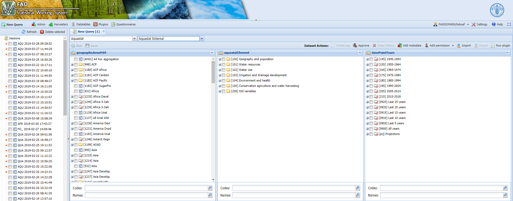
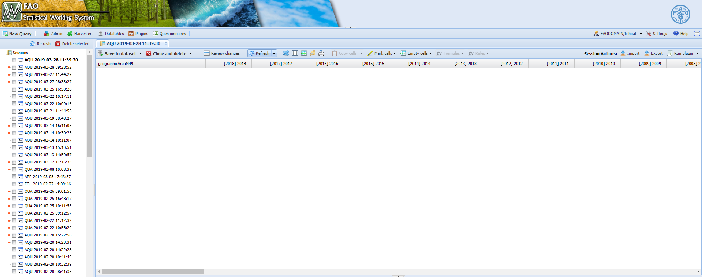

Chapter 3 The faoswsAquastatExternal module
The faoswsAquastatExternal is essentially a data harvester that emerges as demand for making the AQUASTAT process of extracting and reshaping data from external sources (web databases) easier.
Figure 3.1: Workflow of the faoswsAquastatExternal module
Steps
The module executes the following steps to harvester external (FAOSTAT) data.
Identifies AQUASTAT external data sources
The module needs to identify the external data used by AQUASTAT. This identification is made with the help of the SWS datatable aqua_external_sources below:
After identification, the module downloads the data to temporary files and read it in to start the processing.
3.0.1 Reshapes the data sources
Data from different sources are likely to occur in different formats. Therefore, after the download of the data, the module needs to apply a different reshaping strategy to each data source. Regardless the initial shape of the external AQUASTAT data sources, the module is going to convert each single source into an SWS long format dataset with geographicAreaM49, aquastatElement, timePointYears, flagOvservationStatus and flagMethod.
The flagOvservationStatus and flagMethod are “X” and “c” for all data extracted by the faoswsAquasatExternal module.
3.0.2 Maps out AQUASTAT to external sources
With the data already reshaped, it is effortless for the module to keep relevant AQUASTAT elements since the aqua_external_source data table provides the means for correctly mapping out the original external data code to AQUASTAT codes.
3.0.3 Maps out FAOSTAT areas to UNSDM49
The SWS datatable m49_fs_iso_mapping has the correspondence among different international codes (FAOSTAT, UNSDM49, ISO2, ISO3) for geographic areas and is used to convert area codes in the external sources to UNSDM49 codes which is the standard in the SWS.
3.0.4 Saves the output back into SWS
Finally, the module merges the sources into a single dataset. This output is an SWS-compliant long-format dataset name aquastat_external that is saved by the user in the SWS and will be ready to serve as an input of the faoswsAquastatUpdate module.
3.1 Running the module
Log in the SWS;
Click on New Query;
Select AQUASTAT domain and aquastat_external dataset;
Select whatever geographicM49Area, aquastatElement, and timePointYears;
Figure 3.2: Steps 1 to 4
The faoswsAquastatExternal searches and downloads data from external sources. Therefore, what the user is selecting in the query is irrelevant for the module’s output.
Run the query and get an empty session;
Figure 3.3: Empty SWS session of the aquastat_external dataset
Click on Run plugin on the top-right;
Select the faoswsAquastatExternal module and click on Run plugin;
Figure 3.4: Select the AquastatExternal plugin and run it
8. Wait for the results to appear in the session;
Figure 3.5: Select the AquastatExternal plugin output in the session
- Click on Save to dataset. In case new external data are available, please click on Save to dataset for the new data to be integrated to the aquastat_external dataset and later to the aquastat_update dataset;
The aquastat_external dataset has already been saved in the SWS database to prop up the faoswsAquastatUpdate module development. If the user knows that the External sources have not been updated, he/she does not neeed to save the dataset gain.